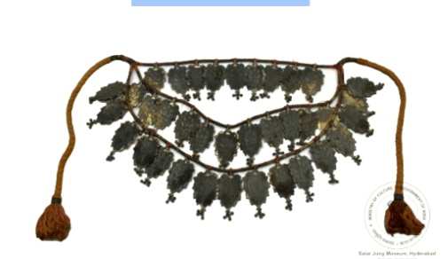

🔇 Is bhasha me is vastu ka audio abhi uplabdh nahi hai.
2. हार

अभिलेख संख्या: XLIV-47
तीन स्ट्रिंग वाला हार जिसमें टुकड़े क्रेनेलेटेड (दांतेदार) पत्ती के आकार के हैं और इन पर फूलों की डंडी और पत्तियों के डिज़ाइन उभरे हुए हैं। प्रत्येक टुकड़े के नीचे तीन लटकन लगे हुए हैं। स्ट्रिंग के बीच में चांदी की धागी लिपटी हुई है। स्ट्रिंग में लाल और पीली धागियाँ हैं और इसके अंत में टसल लगी हुई है। पहली डोरी में 9 टुकड़े हैं, दूसरी में 12 और तीसरी में 15, फूलों के डिज़ाइन अलग-अलग खांचों में उभरे हुए हैं। हार में क्रेनेलेटेड सील है। भारतीय कारीगरों ने हमेशा चांदी के कार्य में खुदाई, नक्काशी और सजावट में असाधारण कौशल दिखाया है। यह हार 19वीं शताब्दी के उत्तरार्ध का है और इसका मूल भारत है।
2. हार
अभिलेख संख्या: XLIV-47
तीन स्ट्रिंग वाला हार जिसमें टुकड़े क्रेनेलेटेड (दांतेदार) पत्ती के आकार के हैं और इन पर फूलों की डंडी और पत्तियों के डिज़ाइन उभरे हुए हैं। प्रत्येक टुकड़े के नीचे तीन लटकन लगे हुए हैं। स्ट्रिंग के बीच में चांदी की धागी लिपटी हुई है। स्ट्रिंग में लाल और पीली धागियाँ हैं और इसके अंत में टसल लगी हुई है। पहली डोरी में 9 टुकड़े हैं, दूसरी में 12 और तीसरी में 15, फूलों के डिज़ाइन अलग-अलग खांचों में उभरे हुए हैं। हार में क्रेनेलेटेड सील है। भारतीय कारीगरों ने हमेशा चांदी के कार्य में खुदाई, नक्काशी और सजावट में असाधारण कौशल दिखाया है। यह हार 19वीं शताब्दी के उत्तरार्ध का है और इसका मूल भारत है।
2. నెక్లెస్
Acc No: XLIV-47
ఈ హారం 19వ శతాబ్దం చివరి భాగం నాటిది భారతదేశం నుండి వచ్చిన కళాఖండం. ఇది మూడు వరుసల హారం, దీనిలో ఉన్న ముక్కలు దంతంతో తయారు చేయబడి, బురుజు ఆకారపు ఆకు రూపంలో ఉన్నాయి. ఆకులపై పూల కాండం మరియు ఆకుల డిజైన్లు ఉబ్బెత్తుగా చెక్కబడ్డాయి. ప్రతి ముక్క కింద మూడు పెండెంట్లు వేలాడుతున్నాయి. రెండు ముక్కల మధ్య వెండి దారాన్ని చుట్టారు. ఈ హారం దారానికి ఎరుపు మరియు పసుపు రంగు దారాలు ఉండి, చివరల్లో కుచ్చు ఉంది. మొదటి వరుసలో 9 ముక్కలు, రెండవ వరుసలో 12 ముక్కలు, మరియు మూడవ వరుసలో 15 ముక్కలు ఉన్నాయి. ఈ హారంపై బురుజు ఆకారపు ముద్ర కూడా ఉంది. వెండి పనిలో చెక్కడం, ఉలితో చెక్కడం మరియు అలంకరించడంలో భారతీయ హస్తకళాకారులు ఎల్లప్పుడూ అసాధారణమైన నైపుణ్యాన్ని ప్రదర్శించారు.
۲. ہار
Acc No: XLIV-47
یہ تین لڑیوں پر مشتمل ایک نہایت دل آویز ہار ہے، جس کے ہر حصے کو بیل نما شکل میں ڈھالا گیا ہے۔ ان حصوں کے کناروں پر باریک اور دلکش نقش و نگار تراشے گئے ہیں، جبکہ سطح پر پھولوں کی بیلوں اور پتّوں کے ابھار دار نقوش بڑی نفاست سے نمایاں کیے گئے ہیں، جو اس کی فنی خوبصورتی کو مزید اجاگر کرتے ہیں۔ ہر حصے کے نیچے تین لاکٹ لٹکے ہوئے ہیں۔ اس ہار کی ڈوری سرخ اور زرد دھاگوں سے بنی ہوئی ہے، اور اس کے سِروں پر خوب صورت جھالر آویزاں ہے۔ پہلی لڑی میں 9، دوسری میں 12 اور تیسری میں 15 اجزا شامل ہیں۔ ہر جزو میں خانہ بند ترتیب کے اندر پھولدار نقوش ابھار دار اندازمیں نمایاں کیے گئے ہیں۔ ہار پر فصیل دار مُہر بھی ثبت ہے۔ ہندوستانی دستکاروں نے چاندی کے فن پاروں پر نقش کَشی، کندہ کاری اور تزئین و آرائش میں ہمیشہ غیر معمولی مہارت کا مظاہرہ کیا ہے۔ یہ ہار انیسویں صدی کے اواخر سے تعلق رکھتا ہے اور ہندوستان سے ہے۔
২. নেকলেস বা কণ্ঠহার
Acc No: XLIV-47
তিন লহরের এই নেকলসে খাঁজকাটা পাতার আকৃতির অনেকগুলি অংশ রয়েছে, যাতে ফুলের বোঁটা এবং পাতার নকশা খোদাই করা আছে। প্রতিটি অংশের নিচে তিনটি করে দুল বা পেন্ডেন্ট ঝুলছে। দুটি অংশের মাঝখানে সুতোর ওপর রুপোলি সুতো জড়ানো রয়েছে। নেকলেসের মূল সুতোটি লাল এবং হলুদ রঙের, যার শেষ প্রান্তে একটি ঝালর বা ফুড়ুলি রয়েছে। প্রথম লহরে ৯টি, দ্বিতীয় লহরে ১২টি এবং তৃতীয় লহরে ১৫টি নকশা করা অংশ রয়েছে এবং ঘর কাটা অংশের ভেতরে ফুলের নকশাগুলি খোদাই করা হয়েছে। নেকলেসটিতে একটি খাঁজকাটা সিল বা মোহর রয়েছে। ভারতীয় কারিগরেরা রুপোর ওপর খোদাই করা, বাটালি দিয়ে নকশা করা এবং অলঙ্করণের কাজে সবসময়ই অসাধারণ দক্ষতা দেখিয়ে এসেছেন। এটি ১৯ শতকের শেষের দিকের এবং এর উৎপত্তি ভারত থেকে।
2. ગળાનો હાર
Acc No: XLIV-47
ત્રણ તારવાળું હાર, જેમાં દરેક ભાગ કિલ્લાની કિનારી જેવા આકારવાળો છે અને ફૂલની ડાંઠ તથા પાંદડાની ઉંચી કોતરણીવાળી આકૃતિઓ ધરાવે છે. દરેક ભાગની નીચે ત્રણ લટકણીઓ (પેન્ડન્ટ) લટકતી જોવા મળે છે. બે ભાગોની વચ્ચે દોરી પર ચાંદીનો તાર વળેલો છે. દોરી લાલ અને પીળા રંગના તાંતણાથી બનેલી છે અને તેના છેડાઓ પર ઝૂલ (ટાસલ) છે. પ્રથમ તાર પર 9 ભાગ, બીજા તાર પર 12 ભાગ અને ત્રીજા તાર પર 15 ભાગ છે. દરેક ખંડમાં ફૂલની ભાત ઉંચી કોતરણીમાં (રિલીફમાં) દેખાય છે. હારમાં કિલ્લાકાર સીલ જેવી આકારરચના છે. ભારતીય કારીગરોએ હંમેશા ચાંદીની વસ્તુઓમાં કોતરણી, ઉકેરણી અને આભૂષણ રચનામાં અદ્વિતીય કુશળતા દર્શાવી છે. આ હાર 19મી સદીના અંત સમયકાળનો છે અને તેનું મૂળ ભારતમાંથી છે.
2. ನೆಕ್ಲೆಸ್
Acc No: XLIV-47
ಇದು ಮೂರು ಎಳೆಗಳನ್ನು ಹೊಂದಿರುವ ಸುಂದರವಾದ ಸರದ ಕಲಾಕೃತಿಯಾಗಿದೆ. ಇದರಲ್ಲಿರುವ ಪದಕಗಳು ಅಂಚು ಕತ್ತರಿಸಿದಂತಹ ಎಲೆಯಾಕಾರವನ್ನು ಹೊಂದಿದ್ದು, ಉಬ್ಬು ಕೆತ್ತನೆಯಲ್ಲಿರುವ ಹೂವಿನ ಕಾಂಡ ಮತ್ತು ಎಲೆಗಳ ವಿನ್ಯಾಸಗಳಿಂದ ಕಂಗೊಳಿಸುತ್ತಿವೆ. ಪ್ರತಿಯೊಂದು ಪದಕದ ಕೆಳಗೆ ಮೂರು ಸಣ್ಣ ಪೆಂಡೆಂಟ್ಗಳು ನೇತಾಡುತ್ತಿವೆ. ಈ ಸರದಲ್ಲಿ ಎರಡು ಪದಕಗಳ ನಡುವೆ ಇರುವ ದಾರಕ್ಕೆ ಬೆಳ್ಳಿಯ ಎಳೆಯನ್ನು ಅತ್ಯಂತ ನಾಜೂಕಾಗಿ ಸುತ್ತಲಾಗಿದೆ. ಸರದ ದಾರವು ಕೆಂಪು ಮತ್ತು ಹಳದಿ ಬಣ್ಣದ ಎಳೆಗಳಿಂದ ಕೂಡಿದ್ದು, ತುದಿಗಳಲ್ಲಿ ಸುಂದರವಾದ ಕುಚ್ಚುಗಳನ್ನು ಹೊಂದಿದೆ. ಇದರ ಮೊದಲನೇ ಎಳೆಯಲ್ಲಿ 9, ಎರಡನೇ ಎಳೆಯಲ್ಲಿ 12, ಹಾಗೂ ಮೂರನೇ ಎಳೆಯಲ್ಲಿ 15 ಪದಕಗಳಿವೆ. ಇದರ ಪ್ರತ್ಯೇಕ ಚೌಕಟ್ಟುಗಳ ಒಳಗೆ ಉಬ್ಬು ಕೆತ್ತನೆಯ ಹೂವಿನ ವಿನ್ಯಾಸಗಳನ್ನು ಸುಂದರವಾಗಿ ಮೂಡಿಸಲಾಗಿದ್ದು, ಈ ಸರವು ಅಂಚು ಕತ್ತರಿಸಿದಂತಹ ವಿನ್ಯಾಸದ ಮುದ್ರೆಯನ್ನು ಹೊಂದಿದೆ. ಬೆಳ್ಳಿಯ ಕಲಾಕೃತಿಗಳ ಮೇಲೆ ಕೆತ್ತನೆ ಮಾಡುವುದು , ಉಳಿಪೆಟ್ಟು ನೀಡುವುದು ಮತ್ತು ಅದನ್ನು ಅಲಂಕರಿಸುವಲ್ಲಿ ಭಾರತೀಯ ಕರಕುಶಲಕರ್ಮಿಗಳು ಯಾವಾಗಲೂ ತಮ್ಮ ಅಸಾಧಾರಣ ಕೌಶಲ್ಯವನ್ನು ಪ್ರದರ್ಶಿಸುತ್ತಾ ಬಂದಿದ್ದಾರೆ. ಭಾರತದಲ್ಲಿಯೇ ರೂಪುಗೊಂಡಿರುವ ಈ ಅದ್ಭುತ ಕಲಾಕೃತಿಯು 19ನೇ ಶತಮಾನದ ಅಂತ್ಯದ ಕಾಲಕ್ಕೆ ಸೇರಿದೆ.
୨. ହାର
Acc No: XLIV-47
ଏହି ତିନୋଟି-ସୂତା ବିଶିଷ୍ଟ ହାର,ଯାହା ମୁନିଆ ପତ୍ର ଆକୃତିରେ ନିର୍ମିତ ହୋଇଛି,ଏହାର ତଳ ଅଂଶରେ ଫୁଲ ଝୁଲୁଅଛି ଏବଂ ଦୀର୍ଘ ପତ୍ର ଭଳି ଖୋଦିତ ହୋଇଛି। ପ୍ରତ୍ୟେକ ପତ୍ରର ତଳ ଭାଗରେ ତିନୋଟି ଫୁଲ ପରି ପେଣ୍ଡେଣ୍ଟ୍ ଝୁଲୁଥିବାର ଦେଖିବାକୁ ମିଳିଥାଏ। ଦୁଇଟି ପତ୍ରକୁ ରୂପା ସୂତାରେ ବନ୍ଧା ଯାଇଥିବାର ଆମେ ଲକ୍ଷ୍ୟ କରିପାରିବା। ରୂପା ସୂତାଗୁଡ଼ିକୁ ନାଲି ଏବଂ ହଳଦିଆ ସୂତାରେ ବନ୍ଧା ଯାଇଛି, ପ୍ରତ୍ୟେକ ସୂତାର ଶେଷରେ ଟାସେଲ୍ ରହିଛି। ପ୍ରଥମ ସୂତାରେ ନଅଟି, ଦ୍ୱିତୀୟରେ ବାରୋଟି ଏବଂ ତୃତୀୟରେ ପନ୍ଦରଟି ପତ୍ର ଖଣ୍ଡ ଆକୃତି ଦେଖିବାକୁ ମିଳିଥାଏ। ଏହି ଧାଡ଼ି ହୋଇଥିବା ପତ୍ର ମଧ୍ୟରେ ଫୁଲର ଡିଜାଇନ୍ କରାଯାଇଛି। ହାରରେ ଏକ କ୍ରିନେଲେଟେଡ୍ ମୋହର ରହିଛି। ଭାରତୀୟ କାରିଗରମାନେ ସର୍ବଦା ଖୋଦନ, କାରୁକାର୍ଯ୍ୟ ଏବଂ ରୂପା କାମରେ ଅସାଧାରଣ ଦକ୍ଷତା ପ୍ରଦର୍ଶନ କରି ଆସିଛନ୍ତି। ଏହାର ଇତିହାସ ଉନବିଂଶ ଶତାବ୍ଦୀର ଶେଷ ଭାଗରେ ରହିଛି ଏବଂ ଏହାକୁ ଭାରତରେ ତିଆରି କରାଯାଇଥିଲା।
2. हार
अभिलेख संख्या: XLIV-47
तीन स्ट्रिंग वाला हार जिसमें टुकड़े क्रेनेलेटेड (दांतेदार) पत्ती के आकार के हैं और इन पर फूलों की डंडी और पत्तियों के डिज़ाइन उभरे हुए हैं। प्रत्येक टुकड़े के नीचे तीन लटकन लगे हुए हैं। स्ट्रिंग के बीच में चांदी की धागी लिपटी हुई है। स्ट्रिंग में लाल और पीली धागियाँ हैं और इसके अंत में टसल लगी हुई है। पहली डोरी में 9 टुकड़े हैं, दूसरी में 12 और तीसरी में 15, फूलों के डिज़ाइन अलग-अलग खांचों में उभरे हुए हैं। हार में क्रेनेलेटेड सील है। भारतीय कारीगरों ने हमेशा चांदी के कार्य में खुदाई, नक्काशी और सजावट में असाधारण कौशल दिखाया है। यह हार 19वीं शताब्दी के उत्तरार्ध का है और इसका मूल भारत है।
2. നെക്ലേസ്
Acc No: XLIV-47
പുഷ്പലതാദികളും ഇലകളും ഉപരിതലത്തിൽ തെളിഞ്ഞുനിൽക്കുന്ന രീതിയിൽ കൊത്തിയെടുത്ത, വശങ്ങൾ ക്രമമായി മുറിക്കപ്പെട്ട ഇലകളുടെ ആകൃതിയുള്ള ഭാഗങ്ങൾ കോർത്തിണക്കിയ മൂന്ന് ചരടുകളുള്ള ഒരു മാലയാണിത്. ഇതിലെ ഓരോ ഭാഗത്തിന് താഴെയും മൂന്ന് വീതം ലോക്കറ്റുകൾ തൂങ്ങിക്കിടക്കുന്നു. ഓരോ ഭാഗങ്ങൾക്കും ഇടയിലായി ചരടിൽ വെള്ളിനൂലുകൾ ചുറ്റിയിട്ടുണ്ട്. ചുവപ്പും മഞ്ഞയും നൂലുകൾ ചേർത്താണ് ഈ മാല കോർത്തിരിക്കുന്നത്, ചരടിൻ്റെ അറ്റത്ത് കുഞ്ചലങ്ങൾ പിടിപ്പിച്ചിരിക്കുന്നു. ആദ്യത്തെ ചരടിൽ ഒമ്പതും, രണ്ടാമത്തേതിൽ പന്ത്രണ്ടും, മൂന്നാമത്തേതിൽ പതിനഞ്ചും ഭാഗങ്ങളുണ്ട്. പ്രത്യേക അറകളായി തിരിച്ചാണ് ഇതിൽ പൂക്കളുടെ മാതൃകകൾ കൊത്തിവെച്ചിരിക്കുന്നത്. ഈ മാലയിൽ പല്ലുകളോടു കൂടിയ ഒരു മുദ്രയുണ്ട്. വെള്ളി ആഭരണങ്ങളിൽ കൊത്തുപണികൾ ചെയ്യുന്നതിലും അലങ്കാരങ്ങൾ ചമയ്ക്കുന്നതിലും ഭാരതീയ കരകൗശല വിദഗ്ധർ എന്നും അസാമാന്യ വൈഭവം പുലർത്തിയിരുന്നു. ഭാരതത്തിൽ നിർമ്മിച്ച ഈ ആഭരണം പത്തൊൻപതാം നൂറ്റാണ്ടിൻ്റെ അവസാന കാലഘട്ടത്തിലേതാണ്.